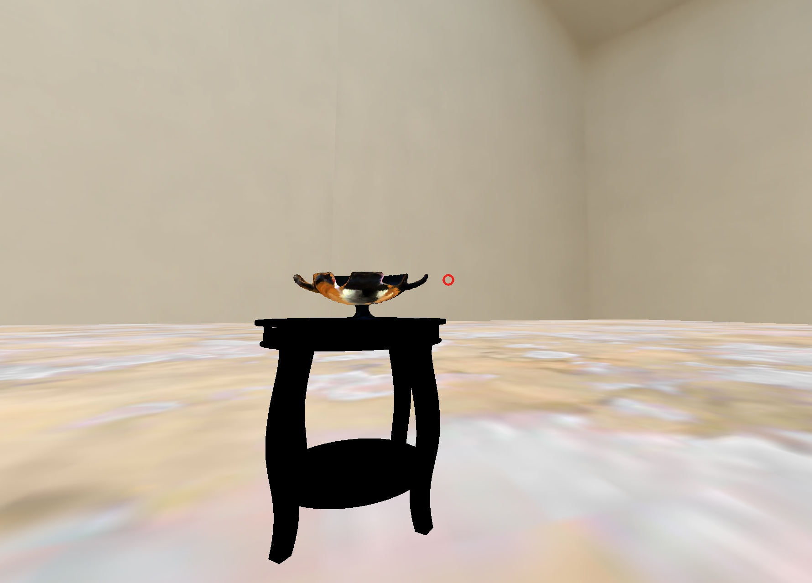

We started this project for two main reasons: First, the Van Buren Learning Collection lived in the Caverno Room of the Neilson Library, but it was hidden in the archives when we first developed this because Neilson was being rebuilt. Being classics nerds, we missed seeing some of the artifacts that filled us with wonder as first-years. Having virtual galleries while the real one is currently untenable, therefore, was a quick fix for us. Second, we wanted to bring this learning collection into the twenty-first century, in terms of functionality, which is why in each VR gallery, visitors can play each item’s audio feature and rotate it. Not only can Smithies still see artifacts from the collection while in reality it lies in the archives, but these galleries help make the Van Buren Learning Collection along with other classical artifacts in the 5-College network more accessible to anyone interested in the classics. Accessibility is a big part of this project, which is why we have a Transcripts page with transcripts of each item’s audio if you are in need of that. If there are further accessibility needs, feel free to get in touch with the developer at sabowitz@smith.edu .
Chances are that if you’re accessing this webpage on a device, it can probably run gallery spaces as well! Gallery spaces can run on: - Oculus Go - Mobile devices - Desktop
We will walk through tutorials for each of these.
When you first open the gallery, using the trigger on your remote, click the spectacles icon in the lower right corner. This will immerse you in the gallery.
When the gallery loads, you’ll notice a small red circle, or reticle. To interact with objects and hear their stories, when the reticle is on one object, click the trigger while pointing your remote at the object.
If you are using a Cardboard viewer, press the spectacles icon in the lower right corner to activate that mode.
When the gallery loads, you’ll notice a small red circle, or reticle. To interact with objects and hear their stories, when the reticle is on one object, tap that object.
To go full-screen, click the spectacles icon in the lower right corner.
To look around, click and drag the window. Unlike other platforms, in the desktop version you can move in galleries by using the arrow keys.
When the gallery loads, you’ll notice a small red circle, or reticle. To interact with objects and hear their stories, when the reticle is on one object, click on that object.
 We would like to thank a lot of people for helping this project get off the ground.